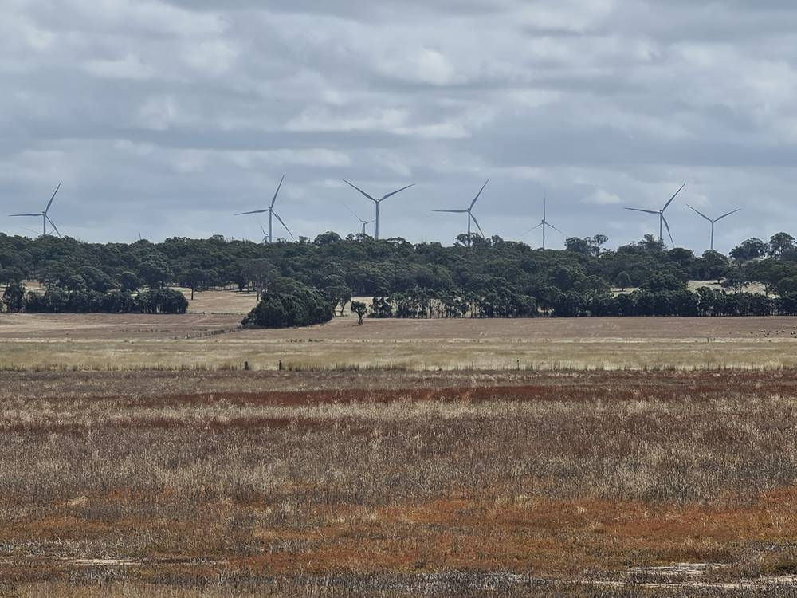

호주 농촌 "재생에너지 반대 아냐, 제대로 된 발언권과 공정한 몫 달라"…NSW 3개 마을 연구

상반기에만 141개 사업 325억 호주달러…주민들 "강제력 있는 참여 기준·이익공유 틀 법에 넣어야"
호주에서 풍력·태양광·송전선이 농촌에 몰리는 가운데, 주민들은 에너지 전환 자체에는 찬성하지만 결정 과정에서 배제되고 있다고 느낀다는 연구 결과가 나왔다. 호주공공정책연구소가 뉴사우스웨일스(NSW)주 농촌 마을 3곳에서 워크숍과 면담을 한 결과, 주민들은 협의가 들쭉날쭉하고 계획이 불투명하며 이익공유와 보상이 불공평하고 오래가지 않는다는 점을 문제로 꼽았고 정부·업계에 대한 신뢰도 약했다. 주민들은 모든 대형 에너지 사업에 강제력 있는 최소 참여 기준을 두고, 이익공유 틀을 지역과 함께 만들어 인허가 규정에 넣으며, 협상을 도울 자원을 주고, 지역 사정에 맞춘 계획 절차를 도입하라는 네 가지를 요구했다. 호주 전력시장운영기관(AEMO)은 2050년 탄소중립까지 신규 송전선 6,000km를 포함해 1,060억 호주달러가 필요하다고 보고 있으며, 올해 상반기에만 141개 사업, 약 325억 호주달러가 자금 조달을 마쳤거나 공사에 들어갔다. 빅토리아주에서는 송전선 VNI 웨스트에 대한 농민 반발이 이어지고 있고, 주 정부는 주민 반대로 두키 지역 재생에너지 구역 계획을 접었다.
시민에너지 관점
호주 연구가 보여 주듯 주민들은 재생에너지를 반대하는 것이 아니라 결정에서 빠지는 것을 반대한다. 이익공유가 사업자의 선의에 맡겨지면 마을마다 몫이 달라지고 신뢰가 무너진다. 한국도 해상풍력·송전망 갈등이 커지는 지금, 주민 참여와 이익공유 기준을 법령에 못 박고 주민이 협상할 수 있도록 공공 지원 조직을 두어야 한다. 지자체와 주민이 먼저 그 기준을 요구하자.
출처: The Conversation 2026-11-12 Simon Wright 원문 보기
豪農村「再エネに反対ではない、きちんとした発言権と公正な分け前を」…NSW州3町の研究
上半期だけで141事業・325億豪ドル…住民「強制力ある参加基準と利益共有の枠組みを法に」
オーストラリアで風力・太陽光・送電線が農村に集中する中、住民はエネルギー転換そのものには賛成しているが、決定過程から排除されていると感じているとの研究結果が出た。オーストラリア公共政策研究所がニューサウスウェールズ（NSW）州の農村3町でワークショップと聞き取りを行ったところ、住民は協議のばらつき、計画の不透明さ、利益共有と補償の不公平さや持続性のなさを問題に挙げ、政府・業界への信頼も弱かった。住民は、すべての大型エネルギー事業に強制力のある最低限の参加基準を設けること、利益共有の枠組みを地域と共に作って許認可規定に盛り込むこと、交渉を支える資源を提供すること、地域事情に合わせた計画手続きを導入することの4点を求めた。豪電力市場運営機関（AEMO）は2050年のネットゼロまでに新規送電線6,000kmを含め1,060億豪ドルが必要とみており、今年上半期だけで141事業、約325億豪ドルが資金調達を終えるか着工した。ビクトリア州では送電線VNIウエストへの農民の反発が続き、州政府は住民の反対でドゥーキー地域の再エネゾーン計画を断念した。
市民エネルギーの視点
豪州の研究が示すように、住民は再エネに反対しているのではなく、決定から外されることに反対している。利益共有が事業者の善意に任されれば、地域ごとに分け前が異なり信頼が崩れる。洋上風力や送電網をめぐる対立が広がる韓国でも、住民参加と利益共有の基準を法令に明記し、住民が交渉できるよう公的な支援組織を置くべきだ。自治体と住民がまずその基準を求めよう。
出典: The Conversation 2026-11-12 Simon Wright 原文を読む
澳大利亚农村："不反对可再生能源，要的是真正的话语权和公平份额"…新州3个小镇研究
仅上半年就有141个项目、325亿澳元…居民："应把有约束力的参与标准和利益共享框架写入法规"
在澳大利亚风电、光伏和输电线集中落户农村之际，一项研究发现，居民支持能源转型本身，但感到被排除在决策之外。澳大利亚公共政策研究所在新南威尔士州3个农村小镇开展工作坊和访谈，居民指出协商质量参差不齐、规划不透明、利益共享和补偿不公平且缺乏长期价值，对政府和产业的信任也很脆弱。居民提出四项要求：为所有大型能源项目设立有约束力的最低参与标准；与社区共同制定利益共享框架并写入规划法规；为谈判提供支持和资源；采用因地制宜的规划程序。澳大利亚能源市场运营机构（AEMO）估计，到2050年实现净零需要包括6,000公里新输电线在内的1,060亿澳元投资，今年上半年就有141个项目、约325亿澳元完成融资或开工。维多利亚州农民对VNI West输电线的反对持续不断，州政府也因居民反对放弃了杜基地区可再生能源区计划。
市民能源视角
正如澳大利亚研究所示，居民反对的不是可再生能源，而是被排除在决策之外。若利益共享只靠开发商的善意，各地份额不同，信任就会崩塌。在海上风电和输电网冲突不断扩大的韩国，也应把居民参与和利益共享标准写入法规，并设立公共支援机构帮助居民谈判。地方政府和居民应率先提出这样的标准。
来源: The Conversation 2026-11-12 Simon Wright 查看原文
Rural Australians back clean energy but want a real say and a fair share, study of three NSW towns finds
With 141 projects worth A$32.5 billion financed or underway in the first half alone, residents call for enforceable engagement standards and benefit-sharing rules
As wind farms, solar plants and transmission lines concentrate in rural Australia, a study has found that residents broadly support the energy transition but feel shut out of decisions about it. Workshops and interviews by the Australian Public Policy Institute in three regional New South Wales towns found inconsistent consultation, opaque planning, benefit-sharing and compensation seen as inequitable and short-lived, and fragile trust in government and industry. Residents asked for four changes: minimum, enforceable engagement standards for all major energy projects; a benefit-sharing framework developed with communities and written into planning rules; resources to help communities negotiate; and place-based planning processes. The Australian Energy Market Operator estimates net zero by 2050 will require A$106 billion of new investment, including 6,000 km of new transmission lines, and 141 projects worth about A$32.5 billion were financed or under construction in the first half of this year alone. In Victoria, farmer opposition to the VNI West transmission line continues, and the state abandoned a planned renewable energy zone around Dookie after local backlash.
Citizen Energy View
As the Australian research shows, residents are not against renewables; they are against being left out of decisions. When benefit-sharing depends on a developer's goodwill, shares differ from town to town and trust collapses. With conflicts over offshore wind and transmission growing in Korea too, participation and benefit-sharing standards should be fixed in law, backed by a public body that helps residents negotiate. Local governments and residents should be the first to demand those standards.
Source: The Conversation 2026-11-12 Simon Wright Read the original